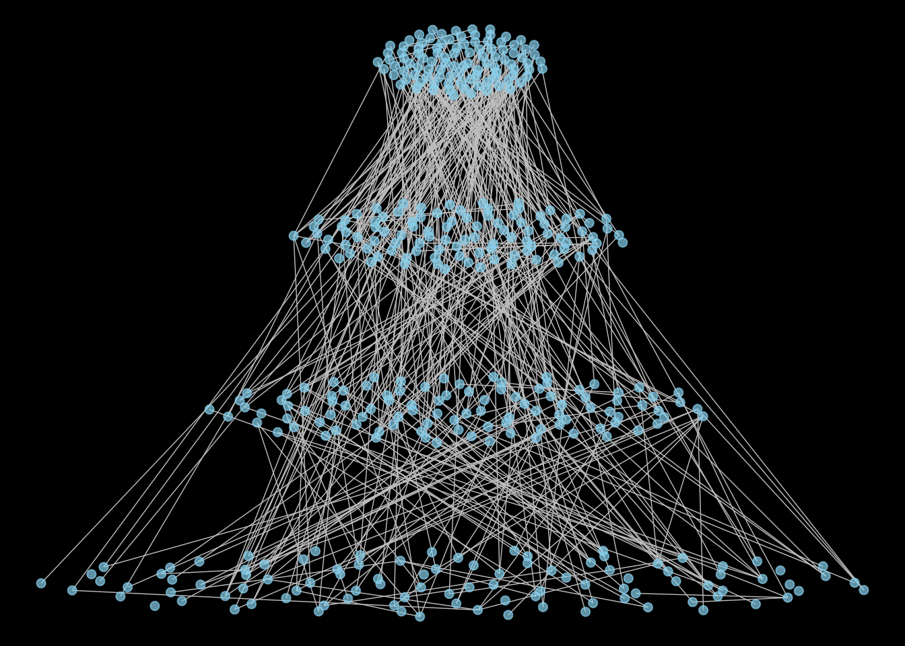
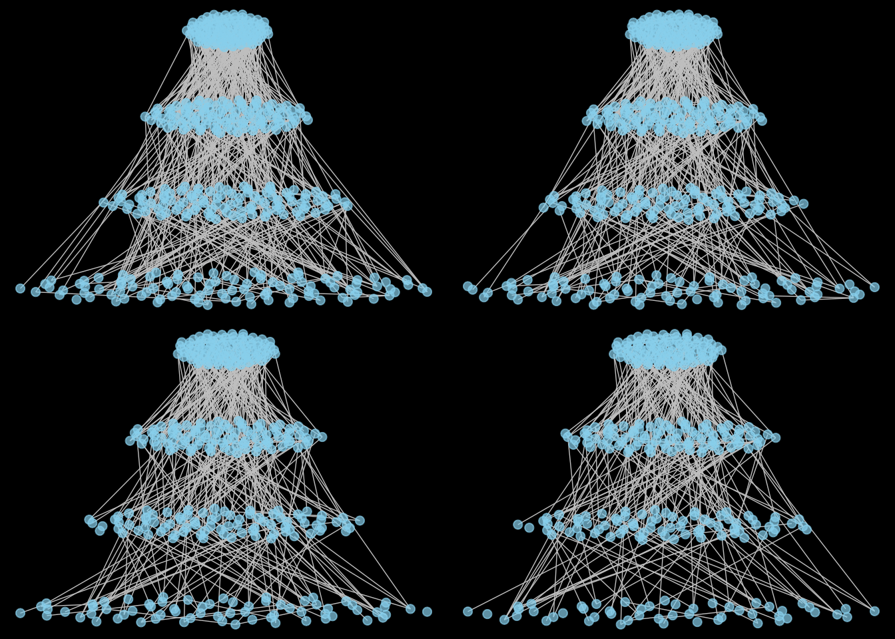

Here is a tutorial on the ‘econetwork’ where the network diversity indices described in Ohlmann et al. 2019 Ecol. Let. are implemented. We will simulate a dataset of networks and then compute diversities indices and dissimilarities at different nodes aggregation levels (i.e species).
The package is availabel on CRAN. Just run :
#install.packages('econetwork')Here, we build a simulated dataset that consists in a list of labeled graphs (by the names of the species). To do so, we will sample local networks in random model of graph : the Block Model. Careful : the sample_sbm function of the ‘igraph’ package does not sample a Stochastic Block Model but a Block Model since the groups are fixed a priori.
#required packages
library(igraph)
library(econetwork)
library(intergraph)
library(GGally)
library(ggplot2)
library(grid)
library(gridExtra)
library(sna)#sample the metaweb
N <- 400 #number of species
pm <- cbind( c(.001, .01,.001,.001), c(.001, .001,.01,.001), c(.001, .001,.001,.01), c(.001, .001,.001,.001) ) #probability of links between blocks (i.e. groups of species)
gMeta <- sample_sbm(N, pref.matrix=pm, block.sizes=c(N/4,N/4,N/4,N/4),directed = T)
V(gMeta)$name <- as.character(1:N)
# to get a nice layout !
goldenRatio <- (sqrt(5) + 1)/2
fibonacciAngle <- 360/(goldenRatio^2)
c <- 1
numPoints <- 100
x <- rep(0,numPoints)
y <- rep(0,numPoints)
for (n in 1:numPoints) {
r <- c*sqrt(n)
theta <- fibonacciAngle*(n)
x[n] <- r*cos(theta)
y[n] <- r*sin(theta)
}
coords <- rbind(cbind(0.2*x,y),cbind(0.4*x,y-50),cbind(0.6*x,y-100),cbind(x,y-150))
gMeta_ggnet <- intergraph::asNetwork(as.undirected(gMeta))
gMeta_ggnet %v% "x" = coords[, 1]
gMeta_ggnet %v% "y" = coords[, 2]
ggnet2(gMeta_ggnet, mode = c("x", "y"),node.size = 2,color = 'skyblue',edge.color = 'grey',alpha = 0.7) +
theme(panel.background = element_rect(fill = "black"))+theme(legend.position = "none")+
theme(plot.margin = unit(c(0,0,0,0), "lines")) 
#build the local networks
K <- 4
#We sample local networks from the metanework
#Defining local communities (i.e. nodes of the network) and local networks as induced subgraph of the metanetwork. We remove some edges of the local network to simulate plasticity of interactions.
speciesList <- list()
gList <- list()
par(mfrow=c(2,2))
for (k in 1:K){
speciesLoc <- c(as.character(1:(N/4-2*k+2)),as.character((N/4+1):(2*N/4-4*k+4)),as.character((2*N/4+1):(3*N/4-8*k+8)),as.character((3*N/4+1):(N-16*k+16)))
gLoc <- induced_subgraph(gMeta, speciesLoc)
if(k != 1){
gLoc<-delete_edges(gLoc, sample(1:length(E(gLoc)))[1:10*k]) #randomly remove edges
}
eval(parse(text=paste0('g_',k,'_ggnet <- intergraph::asNetwork(as.undirected(gLoc))')))
eval(parse(text=paste0('g_',k,'_ggnet %v% "x" = coords[as.numeric(speciesLoc), 1]')))
eval(parse(text=paste0('g_',k,'_ggnet %v% "y" = coords[as.numeric(speciesLoc), 2]')))
eval(parse(text=paste0('p_',k,'<-ggnet2(g_',k,'_ggnet, mode = c("x", "y"),node.size = 2,color = "skyblue",edge.color = "grey",alpha = 0.7) +
theme(panel.background = element_rect(fill = "black"))+theme(legend.position = "none")+
theme(plot.margin = unit(c(0,0,0,0), "lines"))')))
speciesList <- c(speciesList,list(speciesLoc))
gList <- c(gList,list(gLoc))
}
grid.arrange(p_1, p_2, p_3,p_4, widths=c(4, 4), heights=c(4, 4))
names(gList) <- as.character(1:K)The method allows to compute diversity indices/dissimilarities at different aggregation levels. In the case of these simulated data, the groups are knwon. However, on ecological data, the groups can be inferred using the stochastic block model (not to generate networks but to infer groups) using the ‘blockmodels’ R package (for example).
alpha-, beta- and gamma-diversities
We first compute diversity indices at different aggregation levels. Importantly, it is possible to compute alpha-, gamma- and beta-diversities of species (or group) abundances), link abundances or link probabilities while varying a parameter eta that gives more weight to abundant group/links/link probabilities. Moreover, for diversity indices computation, two framework are implemented ‘RLC’ (for Reeve Leinster Cobbold) and ‘Chao’ (for Prof. Chao). The presentation and pros/cons of the different frameworks can be found in the Supplementary Information of Ohlmann et al. 2019 Ecol. Let. For eta=0, abundances do not matter. For eta=1, the indices are linked to Shannon entropy (alpha- and gamma-diversity) and to Kullback-Leibler divergence (beta-diversity).
#Defining the group vector
groups <- c(rep(1,N/4),rep(2,N/4),rep(3,N/4),rep(4,N/4))
names(groups) <- V(gMeta)$name
#Diversity indices at a species level (microscopic diversity) with eta=1 and Reeve Leinster Cobbold framework
divPartition(gList = gList,groups = NULL,eta = 1,framework = 'RLC', type = 'P')## $mAlpha
## [1] 353.4074
##
## $Alphas
## 1 2 3 4
## 400 370 340 310
##
## $Beta
## [1] 1.077629
##
## $Gamma
## [1] 380.8421div_L <- divPartition(gList = gList,groups = NULL,eta = 1,framework = 'RLC', type = 'L')
div_L$mAlpha## [1] 327.1062div_L$Alphas## 1 2 3 4
## 417 350 306 259div_L$Beta## [1] 1.15933div_L$Gamma #we do not look at div_L$meta## [1] 379.2242divPartition(gList = gList,groups = NULL,eta = 1,framework = 'RLC', type = 'Pi')## $mAlpha
## [1] 262.5318
##
## $Alphas
## 1 2 3 4
## 269 263 259 259
##
## $Beta
## [1] 1.021477
##
## $Gamma
## [1] 268.1702#Diversity indices at a group level (mesoscopic diversity)
divPartition(gList = gList,groups = groups,eta = 1,framework = 'RLC', type = 'P')## $mAlpha
## [1] 3.967339
##
## $Alphas
## 1 2 3 4
## 4.000000 3.993193 3.967244 3.909559
##
## $Beta
## [1] 1.003291
##
## $Gamma
## [1] 3.980397div_groups_L <- divPartition(gList = gList,groups = groups,eta = 1,framework = 'RLC', type = 'L')
div_groups_L$mAlpha## [1] 8.332559div_groups_L$Alphas## 1 2 3 4
## 8.680880 8.391806 8.304003 7.982241div_groups_L$Beta## [1] 1.007779div_groups_L$Gamma## [1] 8.397379divPartition(gList = gList,groups = groups,eta = 1,framework = 'RLC', type = 'Pi')## $mAlpha
## [1] 8.725425
##
## $Alphas
## 1 2 3 4
## 8.680880 8.611878 8.765948 8.841934
##
## $Beta
## [1] 1.003265
##
## $Gamma
## [1] 8.753912For interpretation of these indices, we refer to Ohlmann et al. 2019.
In order to describe ecological network patterns, dissimilarity indices on group abundances, link abundances and link probabilities based on diversity indices can be computed. Here again, the eta parameter change the weight given to abundant groups/links/link probabilities.
It is also possible to use species abundances in the computation of diversity indices. To do so, use the ‘abTable’ argument.
abTable <- sapply(1:K,function(x) rpois(N,1)+1) #generating random non nul abundance data
rownames(abTable) = as.character(1:N)
sp_loc <- lapply(gList,function(g) V(g)$name) #setting to 0 the abundances of species that are absent locally
for(i in 1:K){
abTable[setdiff(as.character(1:400), sp_loc[[i]]),i] = 0
}
divPartition(gList = gList,groups = NULL,eta = 1,framework = 'RLC', type = 'P',abTable = abTable)## $mAlpha
## [1] 316.3209
##
## $Alphas
## 1 2 3 4
## 359.0785 328.0253 307.2179 276.6739
##
## $Beta
## [1] 1.170381
##
## $Gamma
## [1] 370.216div_L <- divPartition(gList = gList,groups = NULL,eta = 1,framework = 'RLC', type = 'L',abTable = abTable)
div_L$mAlpha## [1] 263.8852div_L$Alphas## 1 2 3 4
## 337.4243 271.2651 253.8983 210.6823div_L$Beta## [1] 1.357389div_L$Gamma #we do not look at div_L$meta## [1] 358.1947divPartition(gList = gList,groups = NULL,eta = 1,framework = 'RLC', type = 'Pi',abTable = abTable)## $mAlpha
## [1] 262.5318
##
## $Alphas
## 1 2 3 4
## 269 263 259 259
##
## $Beta
## [1] 1.021477
##
## $Gamma
## [1] 268.1702